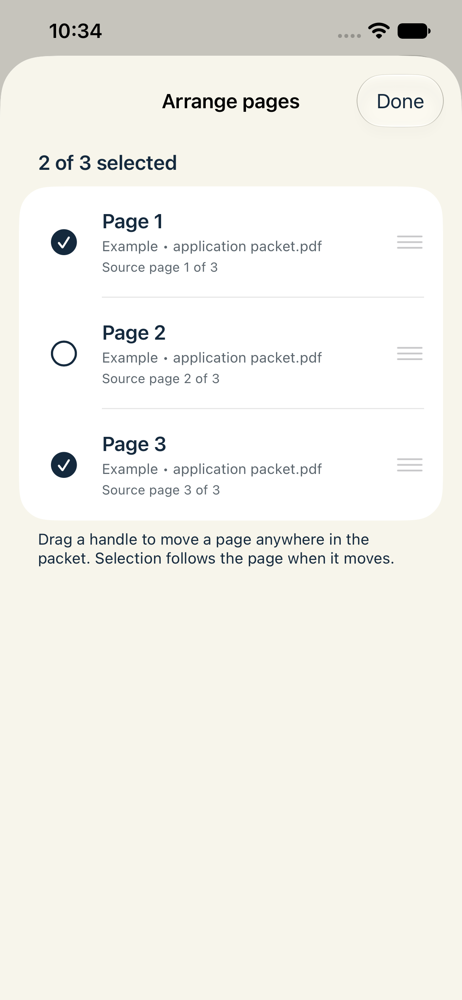

Gather the pages.
Import PDFs or selected photos. Scan paper on supported iPhone or iPad hardware; the prepared Mac version uses file and photo import.
PAPERWORK, PREPARED
Bring documents together, choose the pages you need, and check the finished size before your next upload.
One upfront purchase · No app subscription.
View the iPhone & iPad App Store listing. Check your storefront for current pricing.
A dedicated Mac version for macOS 14 or later is in preparation.

A SMALL, PRACTICAL WORKFLOW
Import PDFs or selected photos. Scan paper on supported iPhone or iPad hardware; the prepared Mac version uses file and photo import.
Choose individual pages or a range, arrange the order, and give the new PDF a name.
Check the measured size and preview every page. Save or share a copy through the system destinations you choose.
CHECK THE DETAILS
Original mode keeps page text, vectors and annotations and does not aim to reduce size. Balanced and Smaller modes render pages as images to try to reduce file size. PDFReady compares the finished size with an original export of those same selected pages.
INSIDE THE APP
App screens using the labelled fictional example. Tap a screen to inspect it.
ON YOUR DEVICE
PDFReady assembles documents on your device. It has no developer-hosted PDF service, accounts, ads or analytics.
Photos and file providers may download the items you choose from your own cloud storage. Workspaces do not automatically sync between devices. To move a finished PDF, save or share that file and import the independent copy on another supported installation.
Read the privacy policy →No app subscription. Check the App Store listing for current pricing and availability.
The dedicated Mac version is in preparation.